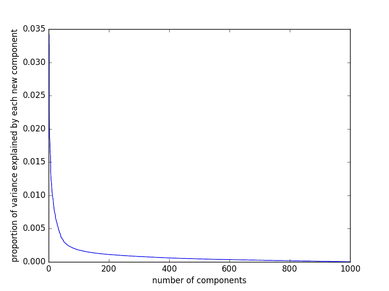

Can a computer correctly classify your resume into its correct job field? I recently built a classification model for my work, Mosaic Data Science, that answers this question. Depending on how you look at it, this model is either 89% or 82% accurate.
My boss granted me permission to post an article about this project to my website. I have decided to use this project to teach you how a computer “thinks.” I will attempt to explain myself as clearly as possible so that many readers can understand the data science concepts I have been working with. I hope that this article may enlighten you about how machine learning works.

This project was written as a demonstration for DARPA, the Defense Advanced Research Projects Agency. DARPA has another project in mind for Mosaic, contingent on our demonstration of a resume classification model. Thus I was tasked with building this model, with guidance from other employees at the company. The other employees spent a good deal of time advising me, though I wrote the vast majority of the code. I ultimately ended up abandoning other approaches to the model and creating our final approach to the model myself, resulting in a model with better performance. I am nonetheless very grateful for the valuable data science advice I continued to receive from the employees around me as I built this model.
The Model
After a great deal of experimenting with the advice of my colleagues, I discovered a code sample on scikit-learn’s website that does precisely what I am looking for. This code classifies news articles into 20 unique newsgroups, which is a very similar problem to classifying resumes by job-field.
After experimenting with many other model versions, I ultimately adopted this code and the score improved dramatically. This code source is found here:
http://scikit-learn.org/stable/auto_examples/text/document_classification_20newsgroups.html
After experimenting with the available classifiers from scikit-learn, I determined that the best model type for this feature setup was a Random Forest Classifier.
A Random Forest is a collection of Decision Trees; and now, of course, I need to explain decision trees! A decision tree as a resume classifier would take the resumes and make a web of statistical choices about each resume. It would attempt to find which words are most strongly correlated with each topic and then use this information to make a category decision.
To explain decision trees, I will reference an example from the Kaggle website. I have spent a good deal of time studying their dataset from the Titanic disaster. Kaggle is hosting a machine-learning competition to generate a model that can predict the survival of Titanic passengers. For this model, the most obvious decision tree feature would be whether the passenger is male or female; females had a much higher survivability rate than males. Next, I could gauge which class the passenger was in. Third class had poor survivability, while first class was much more likely to escape alive. These features would be different nodes on a decision tree. There is also an element of randomness in the decision tree; thus, it will not necessarily produce exactly the same result every time.
For the resume classification project, a decision tree would map out correlations between words. The computer generates a forest of different decision trees and averages out their answers to get the best category choice for each resume. This is a Random Forest.
Data Source

In order to build a resume classifier, I need resumes to classify! Fortunately, another intern at the company was tasked with the job of downloading batches of resumes from Indeed.com using shell scripts which were written by my supervisor. This intern downloaded 1000 resumes for each of 100 different job fields, in batches of 50. His job must have been very tedious.
As I combed through the resume data, my boss and I discovered a problem: the downloaded resumes did not always match the supposed job field they represented! As I was showing my boss the input files, he found a resume that appeared completely irrelevant. This surprised me, and prompted me to investigate further. My colleagues and I had previously assumed this data was “correct.” In other words, we thought what we were downloading actually represented the field it was supposed to represent. Unfortunately, my boss and I only discovered this problem after the temporary employee who downloaded the resumes had already left. A computer model will not work if it is trained on faulty data!
At this point, the model already appeared to be working marvellously! The model produced a high score, but obviously the underlying code was producing faulty predictions, since the data was incorrect. This meant the model was perpetuating the false job-fields it was being fed in. Something was similar in the returned resume results, or the model would not be able to classify the resumes at all. The computer model was successfully finding trends in the faulty resume data.
The downloads appeared to work like a Google search, with the most relevant search results at the top of the list, and less relevant results later. As you went down the results list, searches for “aircraft mechanic” might start turning up auto mechanics, for example. Then, completely irrelevant results would start turning up. Something in these resumes must have matched the original search used to download the resumes; the model was successfully classifying them.
This problem was more obvious with some fields than with others; for instance, there were almost no “helicopter pilot” resumes available at all, but there were hundreds of dental hygienists. This trend probably depends on which job-fields are most searched for on Indeed.com.
To fix this problem, I created an algorithm to verify the resume results. It matched each resume “headline”—a metadata field that was not displayed on the actual resume—to the job field it was supposed to represent. If any of the words in the job field were not in the headline, then that resume was thrown out. Furthermore, if my purging strategy left me with less than 100 resumes, then I threw out that job field altogether, dismissing it as low-quality. This appeared to fix the problem. It did not significantly change the model’s score, but the returned resumes finally appeared to match the fields they should represent.
Natural Language Processing
Building this computer model requires language processing. The computer must be able, at some level, to understand the text that it is being fed.
The computer needed to process, simplify, and standardize the text in each resume. It needed to mathematically rate how important each word is to its particular job-field. It had to generate a standard list of features that the model could look at and compare.
Unfortunately, computers are not advanced enough to read text and “understand” what this text means. Companies have worked at this problem for years and have generated some very clever scripts. Some algorithms are able to extract a good deal of meaning from text, but no computer is able to simply “read” a random document and explain to you “in its own words” what it means. There are some highly complex algorithms out there to extract limited meaning from text, but such approaches are much more expensive and less common. A human can use English grammar to read a resume; a computer looks at text through statistics and mathematics.
Natural Language Processing is an emerging field that uses computers to extract meaning from text. Most of the work in this field uses a “bag of words” theory to study documents. In other words, the computer looks at a document statistically as if it were simply a pile of words, and it attempts to figure out which words are relevant to the topic.
In order for my “bag of words” to be useful to a computer, I needed to standardize the text of each resume. I threw out all extraneous characters such as bullets and punctuation, and kept only the characters that follow the ASCII format. In other words, I kept only standard characters and eliminated any foreign characters or symbols. Then, I lemmatized everything. Lemmas allow the model to recognize many forms of a word as one word. Type, typing, and typed each share the same lemma (or root) of “type.” Thus, lemmatizing would standardize the three word forms to just “type.” Three separate words would only confuse the model; the model should be able to recognize these as one word. Lemmatizing the text additionally removes all capitalization.
Next, the computer must use mathematics to determine which words are important to each resume. The process we used is called TF-IDF, or Term Frequency-Inverse Document Frequency. Fortunately, scikit-learn provides a tool to do this automatically.
A word that is important to a document should occur frequently in that document and infrequently in the others. TF-IDF capitalizes on this by counting up all of the words in each of the resumes and comparing these counts to each other. Each word in every resume gets a TF-IDF “score” which tells the computer how important the word theoretically is to that resume. All of these TF-IDF scores were placed in a massive table and compared to each other. This table contains all of the possible words in the entire dataset as columns (millions of unique words), and all of the different resumes as rows. If a word does not exist in a resume, then it simply gets a score of 0.
TF-IDF rates how important each word is to a particular resume, but it does not rate how important the word is to the job field! To accomplish this, I discovered another handy feature in the scikit-learn package: a chi^2 importance test. Essentially, the script uses this test to determine which words in my large TF-IDF table were most correlated to each job field. I used this tool to determine which resume words to keep and which to discard. This left me with a small overall subset of highly relevant words. I determined that the overall top 1000 most-relevant words was the best selection.
Here is some of the code from the text processing function:
def process(fields, allkeys, docID, map_output, res_output, jobwords):
"""Takes each resume in .json format and processes it"""
#remove duplicate keys before processing them. I want unique resumes.
key = fields['accountKey'] #get the document key
if key in allkeys:
return
#Now do a quality check, to make sure the resume actually is what we think it is.
if not check_jobwords( fields, jobwords ):
return
string = extract(fields) #Extract resume fields into a string
string = remove_garbage(string) #Remove garbage characters
#skip resume if it's less than 10 words. Don't want it.
if len(string.split()) <= 10:
return
string = lemmatize(string) #lemmatize
#Write the results to the disk
res_output.write( str(docID) + " " + string + '\n' ) #"Processed_resumes.txt"
map_output.write( str(docID) + ',' + key + '\n') #docID : document-key mapping
return key #this is necessary to prevent duplicate resumes.
Principal Component Analysis
One of the requirements of the project was that it include Principal Component Analysis. PCA is a method that can reduce the number of features used by the model while losing as little data as possible.
Here is an example of how PCA works. Say a group of points are correlated and produce a nearly straight line. You could simplify the data by flattening it out, and still capture the majority of the variation in the data. Essentially, you can “boil down” the data to something simpler, while still capturing most of what makes the data unique. This process is called “dimensionality reduction.”

What the Random Forest model “sees” is a huge table. Each of the possible resume words are separate columns, and each of the resumes is a different row. The different columns in my data table are called “features.” After processing them through SVD, they become “components.” This table is 1000 columns (words) x ~80,000 rows (resumes) large. The table does not store the actual words; it saves the TF-IDF scores from each word.
Theoretically, less data input would mean less “overfitting.” In other words, reducing the data would streamline the model and prevent it from extrapolating excessive information or seeing trends where there are none. Unfortunately, using PCA brought the score down slightly instead of improving it, hence the model is 82% accurate instead of 89%. In my case, PCA was less helpful than expected.
For my model, I used a method that is very similar to PCA called Singular Value Decomposition (SVD), because the data input is sparse. PCA cannot work on sparse inputs, yet SVD can. Nonetheless, the general process used is the same.
Sparse data is another way of using less computer memory to store information. If most of the datapoints are zero, then instead of saving all of the “zeros,” we can save only the datapoints that actually have data. This is the case for most of the words in my table, since most of the possible words will not be represented in a given resume.

I graphed the amount of information gained by each new SVD component, and I determined that 200 was about the optimal number of components (graph on right). After 200 components (boiled-down words), the model does not gain “new” information as quickly from each new component.
I can use PCA to reduce 1000 word-features into 200! PCA will find correlations among the words and find the simplest way to represent this data. The first 200 PCA components will show the majority of variation from the 1000 words. Thus, I can minimize the data stream that is fed into the model by incorporating fewer features.
Other Tests
I experimented with many other features as I refined the model, with the continued help of my colleagues. I tried using different packages for the features I needed. For instance, I tried using Gensim’s TF-IDF algorithm instead of scikit-learn’s. I discovered that scikit-learn’s algorithm is much faster and more effective for computer modeling.
I tested the different model types found in the 20-newsgroups sample on scikit-learn’s website; the Random Forest model scored the best.
Another version of my random forest model used bigrams instead of raw resume words. In other words, I matched all of the words in pairs of two in an attempt to capture connections between words. I then used TF-IDF to capture only those bigrams that contain words that are in the top 10% of relevance. This model was dramatically worse; it produced a much lower score.
Scoring
There are several different metrics to use to score a classification model. Each score provides a different window into how the model is performing. I used accuracy, precision, recall, and fscore. The computer randomly selects a segment of the resumes to train the model and another segment to test its predictive power and produce a score.
Accuracy simply looks at the model and says, “Of all of the answers, how many did I get right?” Precision asks, “Of all of the answers that were labeled in category X, how many actually are in category X?” And then recall asks, “Of all of the answers that should be in category X, how many did you correctly mark in category X?” The fscore attempts to strike a balance between precision and recall.
Because of my resume validation exercise (purging invalid job fields), the number of resumes in each field was dramatically different. Some fields contained 100 resumes; some fields contained 800! This confused the model and produced a convoluted set of scores:
| Accuracy | 86.3% |
| Precision | 84.2% |
| Recall | 74.0% |
| Fscore | 76.4% |
To balance these scores, I discovered a class_weight=”balanced” feature hidden in the Random Forest code. This tells the model that the different job field categories are unevenly stacked. Simply adding this setting improved all of the scores:
| Accuracy | 89.2% |
| Precision | 88.9% |
| Recall | 85.4% |
| Fscore | 86.3% |
Adding in the SVD (PCA) reduced the score slightly and resulted in this final output:
Conclusion
The computer can successfully identify a job field from a resume. This is especially surprising considering that many people change job fields; thus, their resumes may contain aspects of both fields.
In a model with ~90 job fields and thousands of resumes, an 82% accuracy score seems very impressive. If the number of included job fields were increased dramatically, it is likely that the model would become confused between similar fields, such as “aircraft mechanic” and “auto mechanic.” However, at the current level of complexity, the model functions very well.